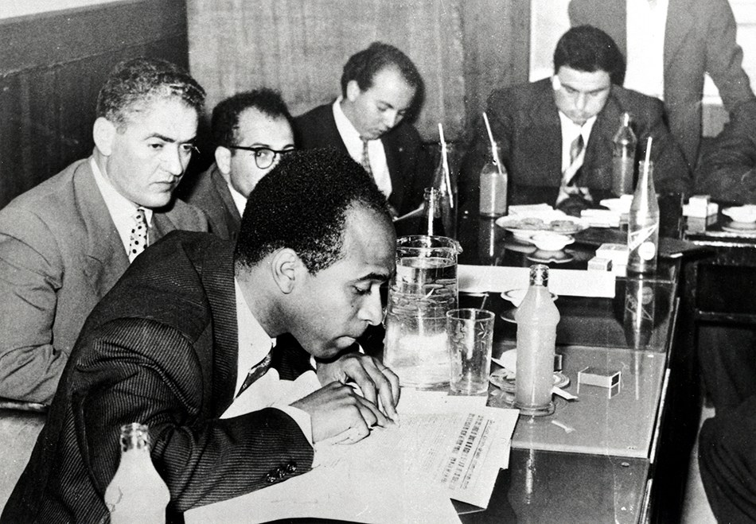
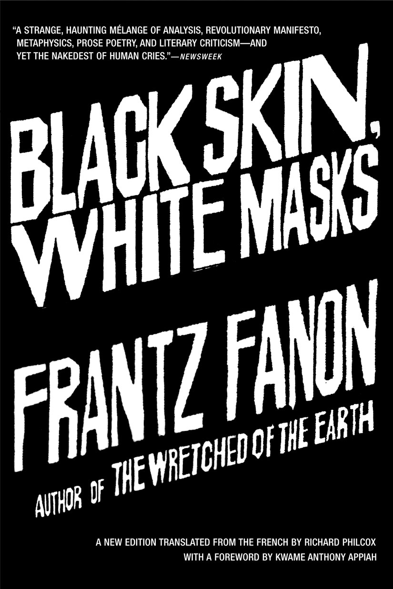
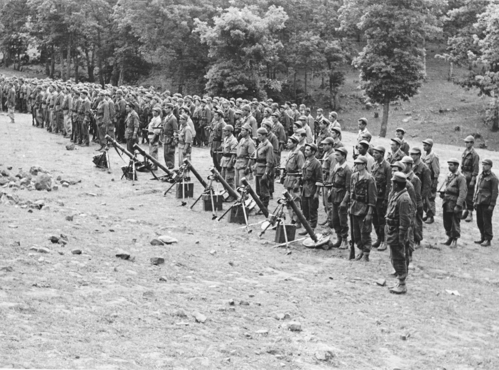
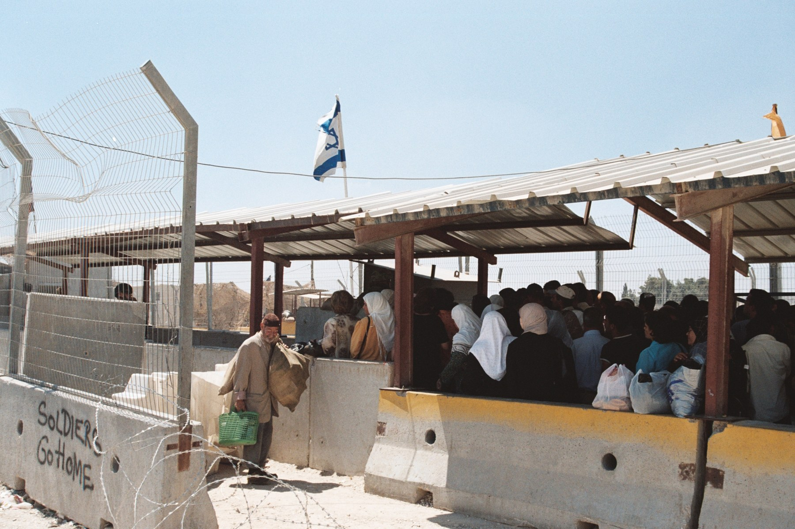
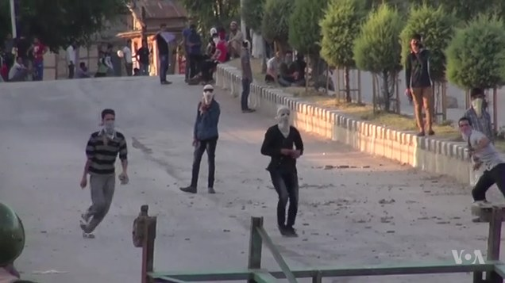
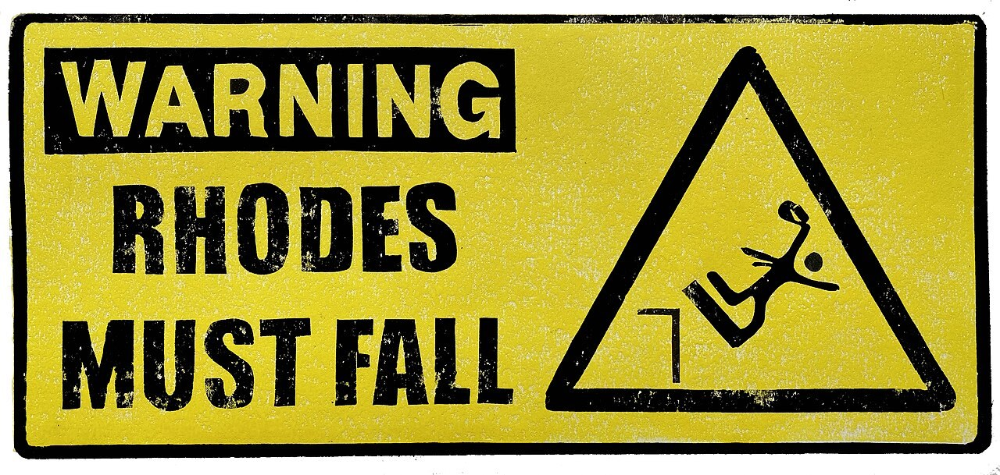
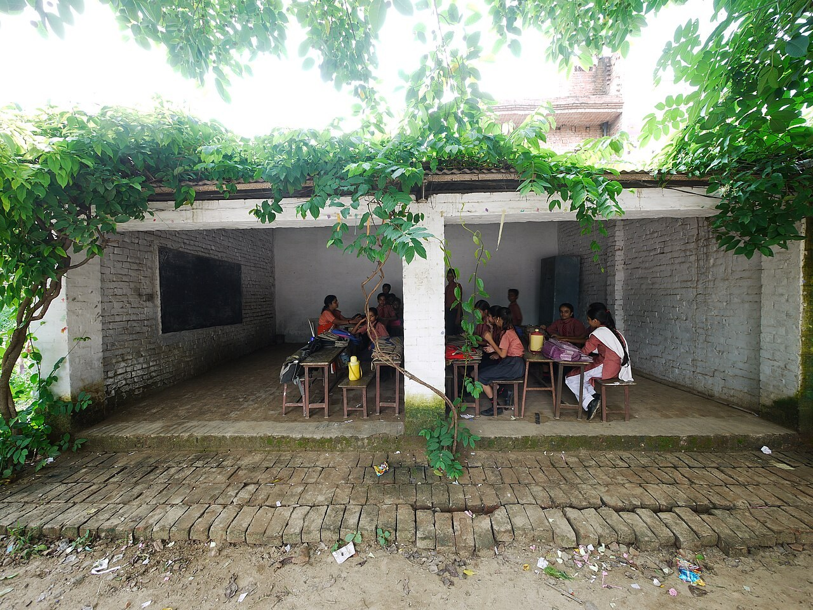
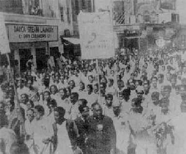
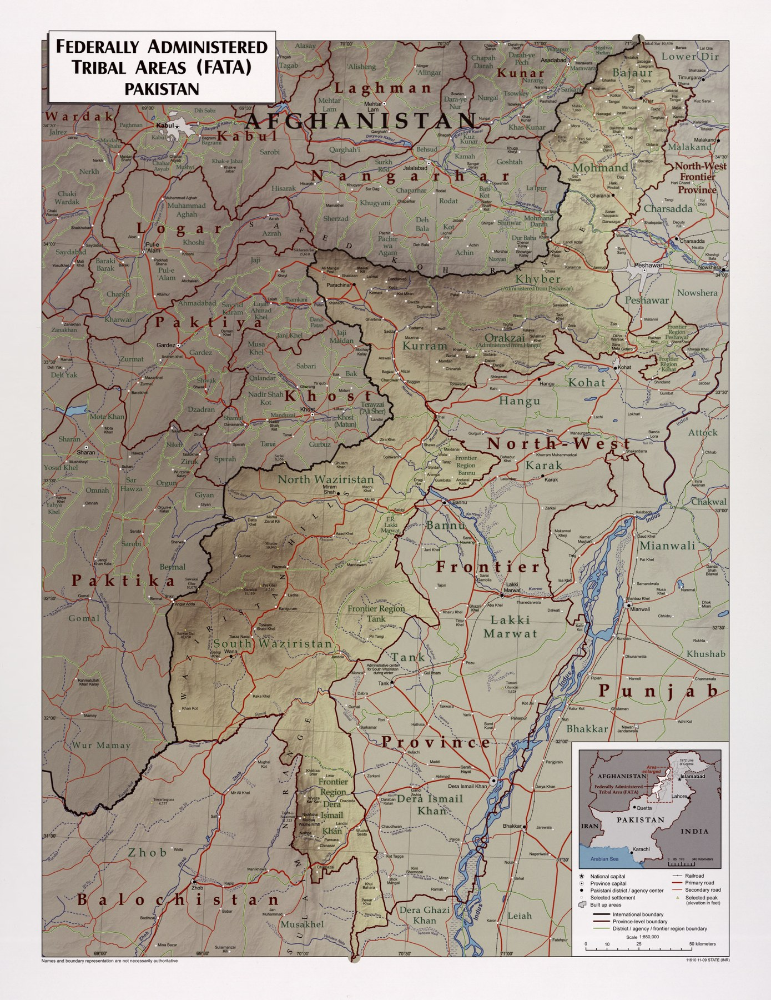

Martinique
Born in Fort-de-France under French colonial rule.
Political Theory Digital Exhibition
A digital exhibition on Frantz Fanon, colonial psychology, and the fight for genuine liberation.

Born in colonial Martinique
Publishes Black Skin, White Masks
Publishes The Wretched of the Earth
Section 1
Frantz Omar Fanon was born in Martinique in 1925, when the Caribbean island was governed within the French colonial world. He later studied medicine and psychiatry in France, where his encounters with racism sharpened his understanding of how colonial power marks the body, speech, and self-image of the colonised person.
In 1953, Fanon began working as a psychiatrist in Algeria at Blida-Joinville Hospital. The Algerian struggle for liberation transformed his political thought. He supported the anti-colonial movement, wrote for the Algerian liberation cause, and became one of the twentieth century's most important theorists of colonialism, psychology, and revolutionary change.
His two most famous books are Black Skin, White Masks, published in 1952, and The Wretched of the Earth, published in 1961. Fanon died in 1961, but his work remains central to political theory because it explains colonialism as a system that rules both institutions and inner life.
Fanon was a psychiatrist, writer, and anti-colonial thinker. His theory matters because it connects political domination to language, memory, fear, desire, and the struggle to become fully human.
Born in Fort-de-France under French colonial rule.
Leaves Martinique to join the Free French forces and later encounters racism in France.
Publishes a landmark study of anti-Blackness, language, desire, and the white gaze.
Begins psychiatric work at Blida-Joinville Hospital during the colonial crisis.
Resigns from colonial service and aligns himself with Algerian liberation.
Publishes The Wretched of the Earth and dies the same year.
Section 2
Black Skin, White Masks is Fanon's study of psychological colonialism. The book asks how colonial racism enters the mind and body: how it teaches people to feel inferior, to desire approval from the dominant culture, and to see themselves through categories created by the coloniser.
Fanon argues that language is never neutral in a colonial society. To speak the coloniser's language can mean entering a hierarchy of civilisation, education, class, and respectability. Accent, vocabulary, and fluency become signs of power.
Fanon shows how the white gaze turns the Black subject into an object. Racism is not only an opinion; it is a social relation that is felt through the body, through fear, surveillance, shame, and the constant awareness of being judged.
Colonial racism can become internalised. The colonised subject may absorb the idea that their own culture, language, skin, or history is inferior. Fanon calls this alienation: a painful separation from the self.

"Fanon studies how colonial racism becomes psychological: it enters speech, desire, posture, confidence, and the way a person inhabits their own body."
Section 3
The Wretched of the Earth moves from the psychology of racism to the political structure of colonial rule. Fanon describes the colony as a world divided by force: police stations, checkpoints, military power, segregated space, and daily humiliation. Colonialism is not simply persuasion; it is rule backed by violence.
Fanon does not simply glorify violence. His argument is more specific and more difficult: revolutionary violence appears as a response to the violence already built into colonial rule. For Fanon, decolonisation is a struggle to dismantle a violent order, recover agency, and create a new political consciousness.
The book also warns that liberation can fail after independence. A new nation needs national consciousness: not symbolic nationalism alone, but a collective project that changes institutions, culture, land, labour, and the relationship between rulers and people.

The colony is built through coercion, surveillance, soldiers, police, and unequal space.
True decolonisation means transforming the structure of power, not only changing the flag.
Fanon wants a democratic political consciousness rooted in people, not elite performance.
Section 4
Fanon's warning is central to his political theory: after independence, local elites may replace foreign rulers while preserving the same exploitative structure. The names and symbols of power change, but ordinary people may still face poverty, police control, dependency, and exclusion.
Fanon uses this term for the local elite class that inherits the state after colonialism. Instead of transforming society, it may imitate the old rulers, protect its own wealth, and act as a middleman for global capital.
A country can become formally independent while colonial habits survive in the courts, police, schools, language hierarchies, bureaucracy, and elite politics. Fanon asks whether that is real freedom.
Changing rulers while preserving colonial institutions.
Transform society, culture, psychology, and public life.
Section 5
Fanon remains important because scholars and activists use his work as a lens for analysing power in the present. These examples are not exact copies of Algeria or Martinique. They are cases where Fanon's ideas help readers analyse racialisation, occupation, militarised control, and decolonising knowledge more precisely.
Fanon's account of racialisation helps explain why policing is not only a legal institution but also a way bodies are classified, feared, and controlled. Scholars connect Fanon to debates about anti-Black violence, surveillance, and dignity.

Some scholars use Fanon to examine occupation, restricted movement, racialised space, psychic injury, and resistance. A careful reading does not claim Palestine is identical to Algeria; it uses Fanon to analyse structures of domination.

Fanonian and decolonial frameworks are sometimes used to discuss militarisation, human-rights concerns, fear, and political control in Kashmir. The strongest academic approach presents this as an interpretive lens, not a settled conclusion.

Rhodes Must Fall shows Fanon's relevance beyond armed struggle. The movement challenged colonial statues, Eurocentric curricula, institutional racism, and the question of who feels at home inside a university.
Section 6
Pakistan and South Asia are not exact copies of Fanon's Algeria. The stronger argument is about parallels and legacies: colonial systems of policing, language prestige, uneven citizenship, and legal exceptionalism can remain powerful after the formal end of empire.
The Police Act 1861 was designed in the aftermath of rebellion to secure colonial order. Its legacy helps explain why policing in Pakistan can still appear oriented toward control, hierarchy, and obedience rather than democratic public service.

Fanon's language chapter helps South Asian students analyse why English often carries elite status, educational privilege, and class mobility, while regional languages may be treated as less refined despite their cultural depth.

The Bengali Language Movement in former East Pakistan shows that language is not only a communication tool. It can carry dignity, recognition, memory, and political belonging when a state tries to impose a hierarchy of culture.

The former FATA system and the Frontier Crimes Regulation show how colonial legal exceptionalism can survive after independence. Fanon helps frame this as a problem of uneven citizenship and inherited colonial administration.
Where do colonial habits remain visible today: in law, school language, bureaucracy, borders, police power, or the way people judge their own culture?
Interactive Quiz
Eight scenario questions test Fanon's key concepts: psychological colonialism, colonial violence, language, education, institutions, and liberation.
Conclusion
Fanon remains powerful because he forces us to ask whether independence is real if colonial institutions, language hierarchies, elite domination, and psychological inferiority continue after the coloniser leaves. His work turns liberation into a deeper question: not only who governs, but how people speak, imagine, organise, and understand themselves.
Sources and Further Reading
These sources anchor the website in Fanon's primary texts, scholarly reference material, contemporary case studies, and Pakistan/South Asia parallels.
Image credits: Fanon portrait, Algerian archive, BLM, Palestine checkpoint, Kashmir map, Rhodes Must Fall, Pakistan policing, English classroom, Bengali Language Movement, and FATA map images are from Wikimedia Commons; book cover images are from Grove Atlantic.